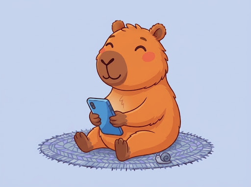

1. Descubra seus interesses
Conte-nos quais áreas despertam sua curiosidade e o que você gostaria de aprender.
Encontre cursos gratuitos de diversas áreas, on-line ou presenciais, e descubra novas possibilidades para aprender.
Encontrar cursos →
5 perguntas rápidas para o seu perfil
Em poucos minutos, você descobre seus interesses e encontra instituições com cursos gratuitos para começar.
Conte-nos quais áreas despertam sua curiosidade e o que você gostaria de aprender.
Com base nas suas respostas, direcionamos você a cursos gratuitos, on-line ou presenciais, ligados aos seus interesses.
Conheça instituições e oportunidades gratuitas de diversas áreas para dar os primeiros passos no seu aprendizado.

O CapiVerso nasceu para tornar mais simples e acolhedora a jornada de quem busca desenvolvimento e formação gratuita, reunindo instituições confiáveis com cursos on-line e presenciais de diversas áreas em um só lugar.
Inspirado na natureza e nas capivaras, o site convida cada jovem a explorar possibilidades sem pressão ou linguagem complicada.
Priorizamos programas gratuitos, bolsas de estudo e organizações com histórico real de apoio à juventude brasileira.
Construído por jovens que vivenciaram na prática o valor de encontrar uma boa porta de entrada para aprender e crescer.